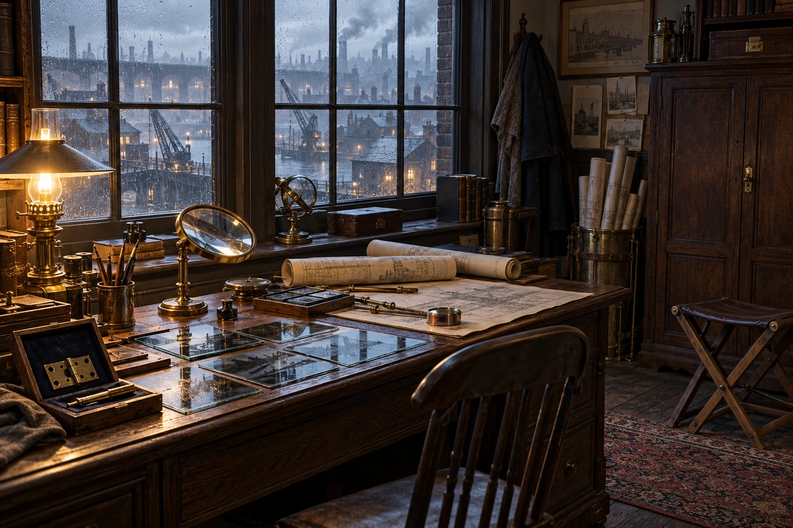

Funzionamento
Identificare il vettore, sostituire la consegna con un esemplare ordinario e sequestrare chi sa ricaricare la cerniera.
Limiti
Un archivio fotografico non localizza persone mai registrate; la squadra non legge pensieri né attraversa ogni muro.
Indizi
- Spese di osservazione e acquisto di un falso campione ordinario.
- L’intermediario ha ricevuto una richiesta che confonde la cerniera III con una Root.
Situazione al 18 maggio 812
Una squadra ha affittato il piano sopra un deposito di strumenti. Conosce un intermediario di Marcel, non la posizione di Room Six.
Obiettivi
Impadronirsi delle cerniere portatili di Lethorne e rivenderne accessi e manutentori a compratori separati.
Verità e informazioni riservate
Mael conserva un secondo contratto: vendere Sybille insieme al mezzo qualora il compratore chieda un Bearer.
Responsabile
Membri
Operazioni e opposizioni
Operazione preparata
Identificare il vettore, sostituire la consegna con un esemplare ordinario e sequestrare chi sa ricaricare la cerniera.
Bersagli
Marcel e la filiera delle cerniere; Elias diventa bersaglio solo se la sua partecipazione viene scoperta.
Tracce e scoperta
Spese di osservazione e acquisto di un falso campione ordinario.
L’intermediario ha ricevuto una richiesta che confonde la cerniera III con una Root.
Possibilità di contrasto
Avvisare o mettere al sicuro il vettore, identificare il compratore, spezzare la catena di accesso. Distruggere il falso non distrugge la cerniera vera.
Evoluzione indipendente
Senza notizie nuove tengono sotto osservazione il deposito; non scoprono magicamente il club o Alexander.
Fratture interne
Sybille abbandona il contratto se ottiene una prova autentica della propria vendita; non basta affermarlo.
Patrocini e indipendenza
nessun patrocinio divino; contratti comprati caso per caso
Figure coinvolte
- Mael Vaur — Archive 4
- Sybille Kest — Eclipse 3
- Xenia Helren — Archive 2
- Ilian Uren — Crucible 1
- Varek Lureth — Eclipse 2
Archi narrativi
- The Moved Bench
- Room for Six
- Certified Weather
- Copies That Cost
- An Exchange Beyond the Room
- The Door Left Unlocked
Responsabilità, compartimenti e operazione
Le informazioni sono ripartite fra responsabili e contatti locali; riferire il segreto della fazione non significa attribuirlo a ogni membro. I contatti elencati conservano lavoro, ubicazione e limiti propri. Un trasferimento richiede un messaggio o un viaggio reale.
Persone e conoscenze
Mael Vaur
Il collegio confiscò effettivamente il lavoro della sorella. In seguito Mael firmò personalmente un accordo che la consegnava come parte di un servizio: sono due atti distinti, non due colpevoli alternativi dello stesso fatto. Racconta il primo per omettere il secondo. Questa precisazione autoriale risolve l’ambiguità fra biografia e timore già fissati; non stabilisce una sorte moderna della sorella finora ignota. Ama oggetti restaurati e prova più rispetto per chi sa stimare un pezzo che per chi sa usarlo.
Conosce il secondo contratto su Sybille e il proprio atto passato. Non conosce Room Six o il ritorno di Edran. Una prova autentica della vendita è un canale possibile di rottura, non una conoscenza già trasmessa a Sybille.
Sybille Kest
Sybille nascondeva partenze di contrabbandieri per risparmiare il prezzo di una casa. Vuole una porta che possa chiudere senza chiedere permesso e può ignorare quanto la sua competenza abbia reso facile rapire altri. Le piace arredare mentalmente stanze ancora non comprate; scherza sui gusti costosi per non parlare della paura di restare dipendente.
La frase sul contratto di Mael nel vecchio campo secret è verità del Narratore, non prova che Sybille lo abbia letto. La sua paura di essere venduta è sospetto, finché non apprende un riscontro reale.
Operazione, prova e risposta
Identificare il vettore, sostituire la consegna con un esemplare ordinario e sequestrare chi sa ricaricare la cerniera.
- Spese di osservazione e acquisto di un falso campione ordinario.
- L’intermediario ha ricevuto una richiesta che confonde la cerniera III con una Root.
Avvisare o mettere al sicuro il vettore, identificare il compratore, spezzare la catena di accesso. Distruggere il falso non distrugge la cerniera vera.
Risorse e divisioni
Un archivio fotografico non localizza persone mai registrate; la squadra non legge pensieri né attraversa ogni muro.
Sybille abbandona il contratto se ottiene una prova autentica della propria vendita; non basta affermarlo.
Senza notizie nuove tengono sotto osservazione il deposito; non scoprono magicamente il club o Alexander.